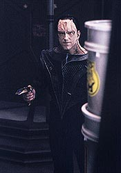
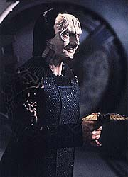
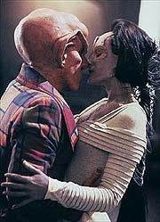
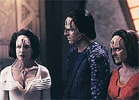
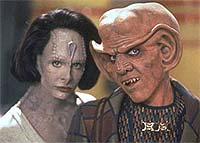

MANCHETE
DO EPISÓDIO
Refilmagem
de "Casablanca" com
Quark é tema para episódio-desastre
Episódio
anterior | Próximo
episódio
Sinopse:
Data Estelar:
desconhecida.

Uma
nave auxiliar Cardassiana avariada chega à estação pedindo
reparos. Seus três ocupantes, todos Cardassianos, são a
professora Natima Lang e dois dos seus alunos, Rekelen e Hogue.
Ela diz que eles foram atingidos por uma chuva de meteoros e Sisko
oferece os serviços de O'Brien nos reparos. No Promenade,
enquanto Bashir continua tentando "pescar" algo sobre o
passado de Garak em mais um dos seus almoços semanais e Odo tenta
descobrir se Quark realmente adquiriu recentemente um dispositivo
de camuflagem.
Quark reconhece Natima, um antigo amor dos tempos da resistência
Cardassiana, mas ela é totalmente indiferente ao Ferengi, que
deixa claro que quer retomar tal relacionamento. Garak avista os
três Cardassianos.
O'Brien descobre que as avarias na nave auxiliar Cardassiana foram
causadas por armas também Cardassianas e não por meteoros.
Natima admite que seus alunos são na realidade importantes líderes
de um movimento de reistência Cardassiano, um que se opõe à
ditadura militar vigente naquele planeta. Eles são fugitivos,
procurados pelo Comando Central Cardassiano.
Em seguida chega uma nave de guerra Cardassiana a estação,
exigindo os fugitivos de volta. Sisko se nega a entregar
refugiados políticos.

De
volta ao bar, Quark oferece o seu dispositivo de camuflagem para
Rekelen e Hogue, para que eles possam fugir da estação. Em troca
ele quer a permanência de Natima com ele em Deep Space Nine. Na
cena seguinte Natima e Quark acabam discutindo sobre o dispositivo
e ela acaba atingindo Quark com um feiser em tonteio.
Muito arrependida, ela acaba confessando o seu amor pelo Ferengi.
Infelizmente, em seguida, Odo faz dos três Cardassianos
prisioneiros. Eles serão trocados por prisioneiros Bajorianos em
Cardássia. Sisko diz não ter o que fazer frente ao acordo entre
os dois governos, Bajor e Cardássia.
Gul Toran vem fazer uma visita a Garak (que avisou o Comando
Central da presença dos fugitivos em DS9 e sugeriu a troca de
prisioneiros) em sua alfaiataria. Toran diz que pode garantir o
retorno de Garak a Cardássia se ele matar os três prisioneiros.
Odo acaba por aceitar as súplicas de Quark e liberta os
prisioneiros.
O Ferengi leva os fugitivos Cardassianos para a comporta de ar,
onde encontram Garak armado e pronto para executar os quatro.
Quark tenta enrolar Garak, quando parece um impaciente e também
armado Toran, que informa a Garak que ele irá terminar o serviço
e que ele (Garak) continuará como um alfaiate em DS9.
Garak vaporiza Toran. Natima diz não poder ficar com Quark por
causa do movimento e os três partem. Quark e Garak deixam o
hangar conversando sobre o ocorrido.
Comentários:

Uma
absurda trama envolvendo Quark e uma Cardassiana de nome Natima
Lang, antigo amor do nosso bartender Ferengi nos tempos da ocupação
Bajoriana e que agora está envolvida em um mal definido movimento
de resistência em seu planeta natal, assume ares de remake de
"Casablanca", com direito mesmo a um Armin Shimerman
fazendo a sua melhor (não necessariamente boa) imitação de
Humphrey Bogart. Apenas o sempre interessante Garak salva o episódio
do abismo total. Entre perdas e lucros, infelizmente a primeira
parcela leva a vantagem. Saiba mais nos comentários a seguir.
As cenas entre Quark e Natima foram difíceis de se assistir
(entediantes mesmo). A idéia inicial de que Quark poderia ter
tido um verdadeiro amor (especialmente com uma Cardassiana) nos
difíceis tempos da resistência Bajoriana é interessante como
conceito, mas absolutamente grosseira como executada aqui.
Infelizmente a falta de química entre os dois foi algo grotesco.
Não dá pra acreditar por um segundo que eles realmente tiveram
um caso naqueles tempos, que eles ainda se sentem apaixonados um
pelo outro depois de sete anos e, PRINCIPALMENTE, em todas as
promessas de sacrifícios feitas por Quark.
Isso fez com que as súplicas de Quark para Odo (em mais uma longa
e cansativa cena do episódio), para que o Comissário liberasse
os prisioneiros, soassem completamente falsas.

O
que é ainda mais absurda é a súbita mudança de atitude de
Natima em relação a Quark, após a Cardassiana atirar um feiser
nele. Isto após desprezar completamente o bartender até ali no
episódio. As cenas seguintes com os dois, atingem um tal nível
de melodrama barato que chegam a embaraçar a audiência.
Falando sobre Odo, é um pouco difícil de engolir que ele poderia
simplesmente liberar os prisioneiros para satisfazer o seu próprio
"senso de justiça" (como ele pode simplesmente olhar
alguns arquivos e decidir se eles merecem ou não a pena de morte,
ou seja lá que pena estivesse reservada a eles), especialmente após
Sisko falar claramente que nada poderia fazer quanto à questão.
O fato de nenhum dos dois governos, nem Bajoriano e nem
Cardassiano, protestar quanto ao ocorrido somente reafirma o
tamanho da farsa que é este episódio. Além de ficar mal
explicado como diabos Natima tinha um feiser em seu poder e como
Toran pôde se infiltrar livremente na estação, também com um
feiser.
(A falta de um estabelecimento mais claro sobre as
responsabilidades de Ben Sisko e do governo provisório é outro
fator negativo. Apresentar Sisko totalmente impotente em relação
à situação também não é nada bom.)
O lado político do episódio foi um fiasco completo. Nós não
tivemos idéia alguma sobre o que Hogue, Rekelen e Natima fizeram
e nem sobre este tal movimento de resistência Cardassiano,
especialmente se olharmos para a série como um todo e percebermos
que tal "movimento" foi utilizado apenas para fornecer
"falsa encrenca" e proporcionar a este episódio específico
um certo (e indevido) "senso de grandeza".

Nenhum
esforço foi dispendido no sentido de tornar o ângulo político
do episódio algo crível e realista. Teria sido necessário
estabelecer uma situação em que ambos os governos se sentissem
na necessidade (por exemplo ficar com o "rabo preso" um
com o outro) ao final do incidente de acobertar todo o ocorrido.
Ao invés disto Odo liberta os prisioneiros e Garak mata Toran e
tudo fica por isso mesmo.
Garak foi a única coisa boa do episódio. Desde a cena inicial
com Bashir, que continua tentando desvendar o passado do
Cardassiano, passando pela melhor cena do episódio, entre Quark e
o alfaiate, em que o Ferengi recebe uma lição de moda
Cardassiana (com toneladas de sub-texto) e a cena com Sisko, em
que Garak é bem mais direto (o que é compreensível devido à
situação). A única cena em que Garak não tenta ser
manipulativo, em que ele fica meio desarmado, é aquela cena na
alfaiataria com Toran, isto fornece ao espectador uma certeza de
que algo sério irá acontecer. Bom trabalho!
Novos elementos sobre Garak: agora nós sabemos que de fato ele
foi exilado em DS9, que ele não concorda com domíno dos
militares sobre Cardassia, que ele é um patriota, que ele quer
muito voltar pra casa e ele já cometeu assassinatos sob encomenda
no passado.
(Muito mais sobre Garak no clássico episódio "The
Wire" desta mesma segunda temporada.)
Robert Wiemer teve uma excelente direção, apesar do fraco
material disponível, com cenas muito longas e entediantes e a
pilha de clichês melodramáticos do caso Quark & Natima, que
beira a paródia involuntária.
Algumas boas idéias: Odo ficar com a garrafa de Quark na mão
entre o final do "teaser" e meados do primeiro ato
(passando por cima da sequência de abertura), a entrada de Garak
no OPS, juntamente com a chegada da nave de guerra Cardassiana, e
a morte de Toran.
Foi uma semana medícocre para os atores regulares, especialmente
Brooks.
Robinson esteve maravilhoso como sempre, os demais atores
convidados decepcionaram.
"Profit and Loss" é mais um péssimo episódio
(felizmente o último da categoria nesta temporada) com inúmeros
problemas de trama, um indefinido e absurdo ângulo político e um
dos menos inspirados (para dizer o mínimo) pares românticos da
história de Jornada: Quark & Natima. Somente Garak
conseguiu levantar algumas cenas e evitar o holocausto completo.
Citações
Bashir - "If you're not
a spy... maybe you're an outcast."
("Se você não é um espião... talvez seja um
exilado.")
Garak - "Or maybe I'm an outcast spy."
("Ou talvez eu seja um espião exilado.")
Bashir - "How can you be both?"
("Como você poderia ser os dois?")
Garak - "I never said I was either."
("Nunca disse que eu era um deles.")
Odo - "So, how well does this woman know you? Just enough
to dislike you, or well enough to really hate you?"
("Então, o qual esta mulher te conhece? Apenas o suficiente
para não gostar de você, ou bem o suficiente para realmente odiá-lo?")
Quark - "She wants to know if it hurts. Of course it
hurts, it's supposed to hurt, it's a PHASER..."
("Ela quer saber se dói. É claro que dói, é feito para
doer, é um FEISER...")
Garak - "They made you a gul? I didn't realize the
situation on Cardassia had gotten so desperate."
("Eles te fizeram um gul? Eu não imaginava que a situação
em Cardássia estava tão desesperadora.")
Trivia:
 O segundo dia de filmagem do episódio
coincidiu com o terremoto de 17 de janeiro de 1994 na Califórnia.
Os atores que usariam maquiagem no dia (Ferengis e Cardassianos,
entre outros) chegaram aos trailers de maquiagem lá pelas duas da
manhã. Às 4h31, com o início dos tremores, a imensa maioria dos
atores entrou nos seus carros, com maquiagem mesmo, e foi para
casa. O diretor do episódio Robert Wiemer, veterano da Nova
Geração e em sua estréia em DS9, lembra com um
sorriso das faces dos pedestres (e mesmo dos outros motoristas) ao
ver aquelas "criaturas" dirigindo carros pelas
trepidantes ruas da Califórnia. Após o estúdio ser liberado
para o reinício das filmagens, dois dias depois, o terremoto
ainda continuou provocando atrasos, ora pelas intermináveis
conversas entre os envolvidos, ora pelos pequenos tremores que se
repetiram ainda por algum tempo.
O segundo dia de filmagem do episódio
coincidiu com o terremoto de 17 de janeiro de 1994 na Califórnia.
Os atores que usariam maquiagem no dia (Ferengis e Cardassianos,
entre outros) chegaram aos trailers de maquiagem lá pelas duas da
manhã. Às 4h31, com o início dos tremores, a imensa maioria dos
atores entrou nos seus carros, com maquiagem mesmo, e foi para
casa. O diretor do episódio Robert Wiemer, veterano da Nova
Geração e em sua estréia em DS9, lembra com um
sorriso das faces dos pedestres (e mesmo dos outros motoristas) ao
ver aquelas "criaturas" dirigindo carros pelas
trepidantes ruas da Califórnia. Após o estúdio ser liberado
para o reinício das filmagens, dois dias depois, o terremoto
ainda continuou provocando atrasos, ora pelas intermináveis
conversas entre os envolvidos, ora pelos pequenos tremores que se
repetiram ainda por algum tempo.
Presença de Garak. Todos os
produtores concordam que Garak foi a melhor coisa do episódio.
Robert Wolfe mesmo destacou o fato de que aparentemente Garak não
conhece a opção de tonteio em seu feiser.
Participação de Mary Crosby (parente
de Denise Crosby, a Tasha Yar da Nova Geração).
Este episódio foi originalmente
chamado de "Here's Looking at You", com um roteiro
ABSURDAMENTE similar a "Casablanca". O medo de uma ação
legal e um pouco de "vergonha na cara" dos produtores
levou a uma rescrita. Ira Behr ficou muito descontente com o
produto final e ele detestou a caracterização de Quark como uma
figura nobre e romântica no estilo de personagem que popularizou
Humphrey Bogart, protagonista de "Casablanca".
Armin Shimerman gostou muito de
trabalhar com Mary Crosby, a quem ele definiu como extremamente
profissional e linda. Ele mesmo confessou uma certa queda por ela
durante as filmagens. Após cada beijo entre os dois as maquiagens
tinham que ser retocadas pois as cores se misturavam e ambas as
faces ficavam horríveis.
Aqui temos o primeiro uso do termo
Comando Central para caracterizar o comando militar (e
governamental) Cardassiano.
Ficha
técnica:
Escrito por Flip Kobler
& Cindy Marcus
Direção de Robert Wiemer
Exibido em 21/03/1994
Produção: 038
Elenco:
Avery Brooks como
Benjamin Lafayette Sisko
René Auberjonois como Odo
Nana Visitor como Kira Nerys
Colm Meaney como Miles Edward O'Brien
Siddig El Fadil como Julian Subatoi Bashir
Armin Shimerman como Quark
Terry Farrell como Jadzia Dax
Cirroc Lofton como Jake Sisko
Elenco convidado:
Mary Crosby como
Natima
Andrew Robinson como Garak
Michael Reilly Burke como Hogue
Heidi Swedberg como Rekelen
Edward Wiley como Gul Toran